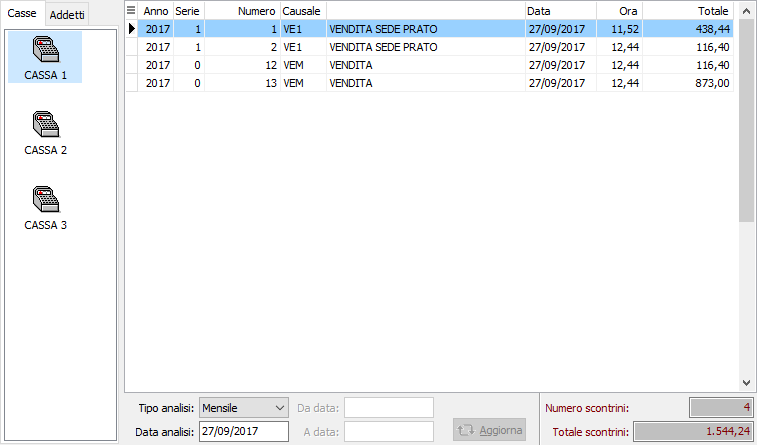
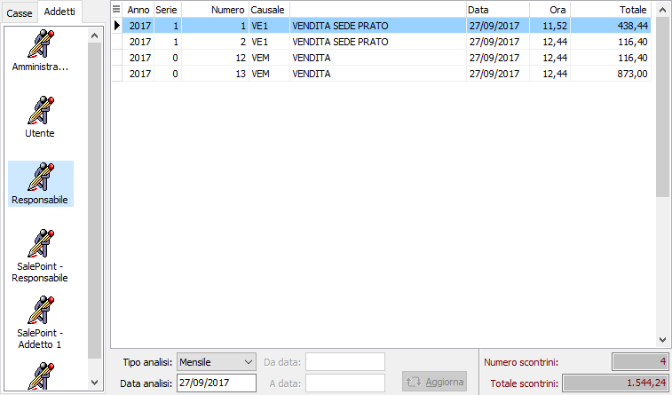

Controllo movimenti per cassa/addetto
La procedura consente di analizzare i movimenti effettuati da ogni singola cassa e/o Addetto. La finestra di analisi si articola su due sezioni verticali; la parte di destra determina il tipo di analisi una per l'analisi per casse e l'altra per l'analisi per addetti; la parte di sinistra riporta il risultato dell'analisi in griglia ed in basso un pannello con i parametri di selezione. In entrambe le sezioni sono attivi i pulsanti della toolbar Stampa ed Anteprima per produrre il report a stampa dell'analisi visualizzata.
Nella sezione di sinistra compaiono tutte le casse presenti più il gruppo relativo agli eventuali movimenti senza la specifica di cassa; selezionando i singoli elementi saranno visualizzati nella sezione di destra i movimenti relativi alla cassa ed ai parametri di selezione elencati in basso.

TIPO ANALISI: definisce il criterio di analisi con cui saranno visualizzati i movimenti:
Giornaliero: saranno visualizzati i movimenti registrati nella data di analisi.
Settimanale: saranno visualizzati i movimenti registrati nella settimana relativa alla data di analisi.
Mensile: saranno visualizzati i movimenti registrati nel mese relativo alla data di analisi.
Altro: saranno attivati i parametri da data, a data e saranno visualizzati i movimenti compresi nel periodo inserto.
DATA ANALISI: indica la data di registrazione dei movimenti da visualizzare in base alla tipologia di analisi selezionata tra giornaliero, settimanale e mensile.
DA DATA: indica la data di registrazione dei movimenti da cui si intende iniziare l'analisi per la tipologia di analisi altro.
A DATA: indica la data di registrazione dei movimenti con cui si intende terminare l'analisi per la tipologia di analisi altro.
PULSANTE AGGIORNA: Aggiorna la visualizzazione dei movimenti quando si variano i parametri sopra riportati.
Nella sezione di sinistra compaiono tutti gli addetti presenti più il gruppo relativo agli eventuali movimenti senza la specifica dell'addetto; selezionando i singoli elementi saranno visualizzati nella sezione di destra i movimenti relativi all'addetto ed ai parametri di selezione elencati in basso.
I parametri di selezione sono gli stessi dell'analisi per casse definiti in precedenza.
